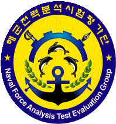

고성능 주행 감성 해석 및 버추얼 모델 기반 운전자 퍼포먼스 피드백 Application 시스템 개발
Period 2026.04 ~ 2026.11

레이더 상황실 AI 기술 적용방안 연구
Period 2026.05 ~ 2026.11
운전 성향별 맞춤형 차량 부품 마모 및 고장 예측 실시간 디지털 샤시 트윈 기술 개발
Period 2024.09 ~ 2025.09
차량-트레일러 간섭방지위한 한계각도 실시간 추정 로직 개발
Period 2024.06 ~ 2025.02
탑승자 이질감 저해요인을 고려한 인간운전자 드라이빙 패턴 모사 자율주행 AI-Agent 개발
Period 2022.12 ~ 2023.08
MDPS 토크 피드백 제어기의 외란 강건 성능 및 조향 성능 개선을 위한 제어 로직 고도화 연구
Period 2022.07 ~ 2023.05